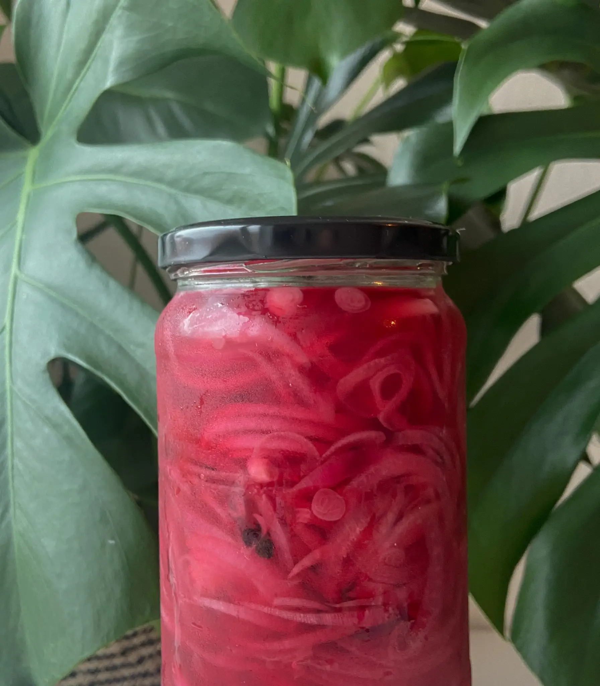

ANNAS
madunivers
Velkommen til Annas madunivers - din guide til velsmagende mad på et budget! Jeg deler budgetvenlige
opskrifter og tips, der gør det nemt at spise godt uden at bruge for mange penge. Lad mig inspirere dig til lækker madlavning, der ikke sprænger dit budget. Velbekomme!

MASONJAR
SALATEN
Mason jar salater kan komme i mange forskælinge variationer og er en god måde at forberede din madpakke til flere dage.
læs mere

MORGENMAD
MUFFINS
Drømmer du om en sund og nem morgenmad, der ikke sprænger budgettet? Så er min opskrift på budgetvenlige morgenmads muffins lige noget for dig!
læs mere

BRUG DINE
LØG
Sådan kan du bruge dine løg og få dem til at holde længere. Undgå madspil - Har du købt en hel pose løg men skulle kun bruge nolge få, læs videre og lær hvordan du kan sylte eller fryse dine løg.
læs mere